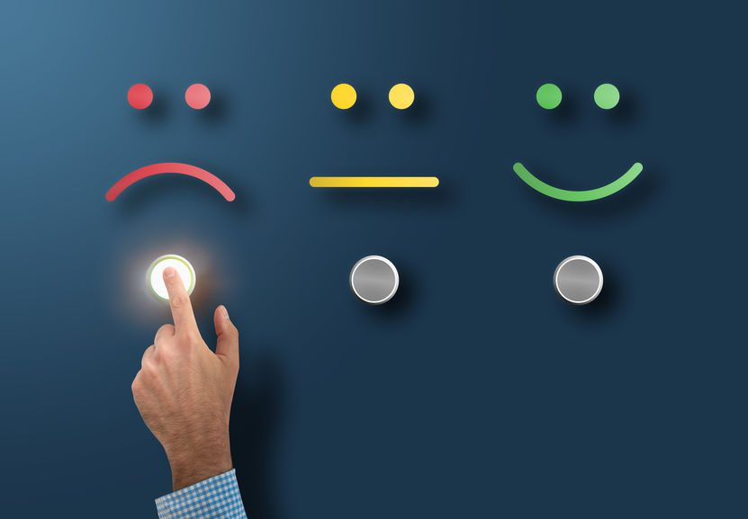
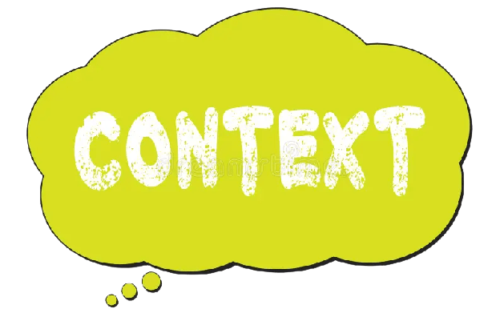
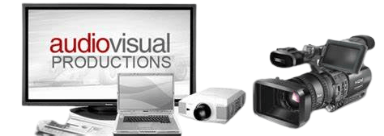
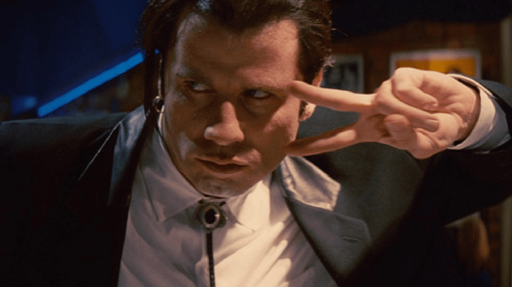

Top Movie Review Websites

What is a Review ?
A review is an evaluation of a publication, service, or company such as a movie (a movie review),
video game (video game review), musical composition (music review of a composition or recording),
book (book review); a piece of hardware like a car, home appliance, or computer; or an event or
performance, such as a live music concert, play, musical theater show, dance show, or art
exhibition.
When It's come to movies, a well formed review goes beyond than simply summarizing the plot.
such as film's artistic elements, thematic content, actors' performances, offering viewer a thoughtful
perspective that enhances their movie-going experience.
and to write a good review, you need to have a good knowledge about the movie and the industry. As
some exaples for key components to write a good review
(click on any of below to jump to the section)
- Understand the Movie Context
- Context refers to the details surrounding a specific idea, situation or event.
In film, context is the relevant information that helps viewer understand
the meaning of movie.

- Visual and Audio Elements
- Cinematography and sound design are vital components of filmmaking that greatly impact
the audience's emotions and engagement. Comment on the film's visual aesthetics, camera work,
lighting, and how they contribute to the storytelling. Additionally, evaluate the sound design,
including the music score and sound effects, and how they enhance or distract from the viewing experience.

- Themes and Symbolism
- What is Symbolism? "Something that stands for, represents or denotes Something Else"
As a screenwriter, a full grasp of symbolism is integral to writing a more visual and
meaningful screenplay. So, let’s get started with a symbolism definition before we discuss
how to wield this storytelling tool.

- Plot Summary vs. Analysis
- Summary and analysis are two different things. A summary is rewriting what the story is about,
but putting it in your own words1. A summary is concise and does not include your own opinions.
An analysis is breaking down the reading into smaller parts and examining it1. An analysis is
reaching your own conclusions about how the elements of a topic, theory, issue, or story fit
together2. An analysis is deeper and more critical than a summary.